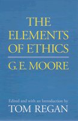

<body bgcolor="#FFFFFF" text="#000000" link="#0000FF" vlink="#CC0000" alink="#CC0000"><center><hr width="350" size="1" align="center" noshade>Ten previously unpublished lectures showing Moore's position regarding ethics in relation to conduct in earlier work differs from the one presented in <I>Principia</I><hr width="350" size="1" align="center" noshade><p><a href="https://cdcshoppingcart.uchicago.edu/Cart/ChicagoBook.aspx?ISBN=9780877227700&&PRESS=temple" target="_top">Buy this book!</a> | <a href="https://cdcshoppingcart.uchicago.edu/Cart/Cart.aspx?PRESS=temple" target="_top">View Cart</a> | <a href="https://cdcshoppingcart.uchicago.edu/Cart/Cart.aspx?PRESS=temple" target="_top">Check Out</a></p><p></p></center><!--none//--><h1>Elements of Ethics</h1>
<h3>G. E. Moore, edited by Tom Regan</h3>
<P>cloth 0-87722-770-5 $71.50, Oct 91, <FONT COLOR=#990033>Out of Stock Unavailable</FONT>
<br>paper 1-59213-194-8 $38.95, Apr 03, <FONT COLOR=#990033>Available</FONT>
<BR> 272 pp
6x9
</P><BLOCKQUOTE><I>"An important publication for philosophers specializing in twentieth-century philosophy or moral philosophy."</I>
<br>&#151<b><I>Library Journal</I></b><I></I></BLOCKQUOTE>
<p>George Edward Moore is among this century's most influential philosophers. Perhaps best known for his "defense of common sense," he also made important contributions to metaphysics and theory of knowledge. But it is in ethics, and especially owing to the positions he develops in his <I>Principia Ethica</I>, first published in 1903, that his ideas have had their most enduring influence.
<p>A forerunner to this famous work, <I>The Elements of Ethics</I> is a series of ten unpublished lectures that were presented by Moore, then in his mid-twenties. <I>The Elements</I> shows that <I>Principia Ethica</I> did not spring fully-formed from Moore's pen but evolved slowly over time. In these lectures, Moore begins with the same question he asks in <I>Principia Ethica</I>: What is Good? Importantly, his answer is the same one he offers in <I>Principia</I> and many of its supporting arguments also appear, though sometimes in embryonic form. Moreover, in these lectures we also find sustained critiques of those who commit the "naturalistic fallacy," and of John Stuart Mill's commission of it in particular.
<p>In <I>The Elements</I>, however, Moore's position regarding ethics in relation to conduct differs in important respects from the one presented in <I>Principia</I>, and the former work contains important discussions, ranging from Christian ethics and the possibility of free will, not found in the latter.
<BR>&nbsp;<h2>Excerpt</h2><P>Excerpt available at <a href="http://www.temple.edu/tempress">www.temple.edu/tempress</a></p>
<BR>&nbsp;<h2>Reviews</h2>
<p><I>"Scholars of Moore's philosophy will be grateful to Tom Regan for producing this volume."</I>
<br>&#151<b><I>Ethics</I></b>
<p><I>"...indispensable for anyone who wishes to understand Moore's personal and philosophical developments. Regan enables us to see Moore working his way through positions we did not know he had considered so carefully, and thereby to obtain an enriched sense of what Moore is doing in </I>Principia Ethica<I>."</I>
<br>&#151<b><I>International Studies in Philosophy</I></b>
<p><i>"This book does help to clarify some aspects of the development of Moore's thinking and so will interest mainly those who already have considerable familiarity with it."</i>
<br>&#151<b><i>Choice</i></b>
<BR>&nbsp;<h2>Contents</h2><P>
<p>Preface
<br>Editor's Introduction
<br>Syllabus for Moore's Lectures
<br>Moore's Introduction
<br>1. The Subject-Mater of Ethics
<br>2. Naturalistic Ethics, Especially the Ethics of Evolution
<br>3. Hedonism
<br>4. Hedonism Continued
<br>5. Some Main Forms of Metaphysical Ethics
<br>6. Ethics in Relation to Conduct
<br>7. Free Will
<br>8. The Ethics of the Inner Life
<br>9. Practical Applications
<br>10. General Conclusions
<br>Index
</P><BR>&nbsp;<H2>About the Author(s)</H2>
<table><tr><td valign="top"><img src="/tempress/authors/789_au2.gif" height="90" width="75"></td><td width="100%" valign="middle"><p><b>Tom Regan</b> is Professor Emeritus of Philosophy at North Carolina State University. Among his many books are <I>Bloomsbury's Prophet: G. E. Moore and the Development of His Moral Philosophy</I> (Temple) and, most recently, <I>The Animal Rights Debate</I> (with Carl Cohen).</P></td></tr></table>
<BR><H2>Subject Categories</H2>
<p><A HREF="/tempress/philosophy.html" TARGET="_top">Philosophy and Ethics</a>
</p>
<p align="center"><a href="https://cdcshoppingcart.uchicago.edu/Cart/ChicagoBook.aspx?ISBN=9780877227700&&PRESS=temple" target="_top">Buy this book!</a> | <a href="https://cdcshoppingcart.uchicago.edu/Cart/Cart.aspx?PRESS=temple" target="_top">View Cart</a> | <a href="https://cdcshoppingcart.uchicago.edu/Cart/Cart.aspx?PRESS=temple" target="_top">Check Out</a></p><p><font face="Arial" size="1"><a href="copyright.html" onMouseOver="window.status='Web Copyright Policy';return true;" onMouseOut="window.status=''" title="Web Copyright Policy">&copy;</a> 2015 <a href="http://www.temple.edu" target="new" onMouseOver="window.status='Link to Temple University home page';return true;" onMouseOut="window.status=''" title="Link to Temple University home page">Temple University</a>. All Rights Reserved. http://www.temple.edu/tempress/titles/789_reg.html</font></p>